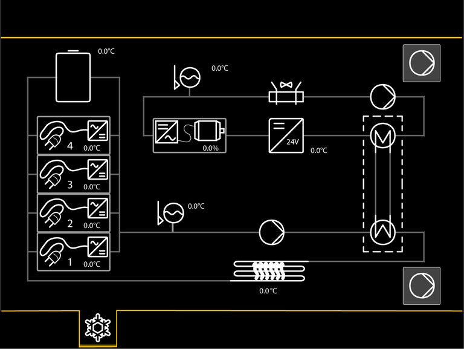
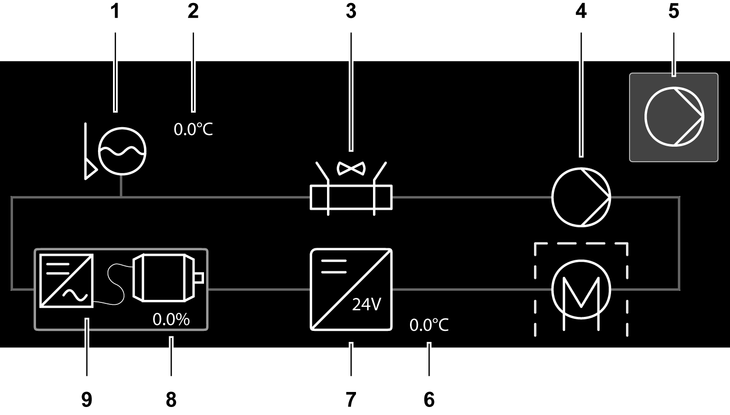
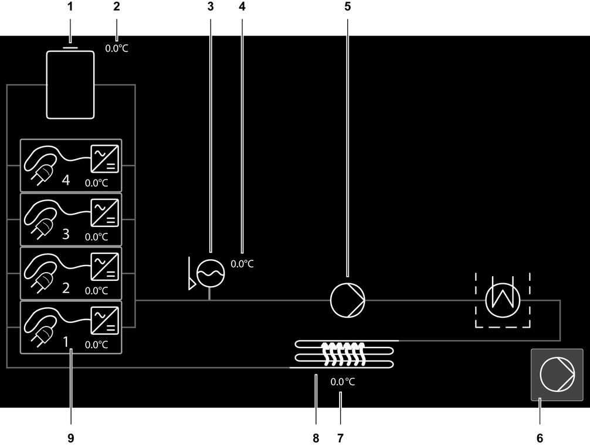

Bildschirmseite Thermomanagementsystem (Hochvoltsystem)
Taste Bildschirmseite Thermomanagementsystem
Bildschirmseite Thermomanagementsystem einblenden.

Fig. 2787: Bildschirmseite Thermomanagementsystem
Fig. 2787: Bildschirmseite Thermomanagementsystem

Fig. 2788: Bildschirmausschnitt Elektrokomponentenkreislauf
Fig. 2788: Bildschirmausschnitt Elektrokomponentenkreislauf
Anzeige Kühlmittelfüllstand | |
Kühlmitteltemperatur | |
Anzeige Wasserkühler und Hydraulikölkühler | |
Anzeige Wasserpumpe | |
Taste Entlüftung | |
Temperatur des DC-DC-Wandlers | |
Anzeige DC-DC-Wandler | |
Temperatur des Elektromotors | |
Anzeige Elektromotor mit Wechselrichter |
Taste Entlüftung
Wasserpumpe ist ausgeschaltet.
Wasserpumpe zur Entlüftung einschalten.
Maschine in Betrieb: Taste hat keine Funktion.
Taste Entlüftung (leuchtet grün)
Wasserpumpe ist zur Entlüftung eingeschaltet.
Wasserpumpe ausschalten.
Maschine in Betrieb: Taste hat keine Funktion.
Anzeige Kühlmittelfüllstand
Kühlmittelfüllstand im Ausgleichsbehälter.
Anzeige Kühlmittelfüllstand (leuchtet gelb)
Kühlmittelfüllstand ist niedrig.
Anzeige Kühlmittelfüllstand (blinkt rot)
Kühlmittelfüllstand ist zu niedrig.
Anzeige Wasserkühler und Hydraulikölkühler
Wasserkühler und Hydraulikölkühler.
Anzeige Wasserkühler und Hydraulikölkühler (leuchtet gelb)
Warnung des Wasserkühlers oder des Hydraulikölkühlers ist aufgetreten.
Anzeige Wasserkühler und Hydraulikölkühler (blinkt rot)
Fehler des Wasserkühlers oder des Hydraulikölkühlers ist aufgetreten.
Anzeige Wasserpumpe
Wasserpumpe.
Anzeige Wasserpumpe (leuchtet gelb)
Warnung der Wasserpumpe ist aufgetreten.
Anzeige Wasserpumpe (blinkt rot)
Fehler der Wasserpumpe ist aufgetreten.
Anzeige Elektromotor mit Wechselrichter
Elektromotor mit Wechselrichter.
Anzeige Elektromotor mit Wechselrichter (leuchtet gelb)
Warnung des Elektromotors oder des Wechselrichters ist aufgetreten.
Anzeige Elektromotor mit Wechselrichter (blinkt rot)
Fehler des Elektromotors oder des Wechselrichters ist aufgetreten.
Anzeige DC-DC-Wandler
DC-DC-Wandler.
Anzeige DC-DC-Wandler (leuchtet gelb)
Warnung des DC-DC-Wandlers ist aufgetreten.
Anzeige DC-DC-Wandler (blinkt rot)
Fehler des DC-DC-Wandlers ist aufgetreten.

Fig. 2806: Bildschirmausschnitt Hochvoltbatteriekreislauf
Fig. 2806: Bildschirmausschnitt Hochvoltbatteriekreislauf
Anzeige Hochvoltbatterien | |
Durchschnittstemperatur der Hochvoltbatterien | |
Anzeige Kühlmittelfüllstand | |
Kühlmitteltemperatur | |
Anzeige Wasserpumpe | |
Taste Entlüftung | |
Temperatur des Hochvoltheizers | |
Anzeige Hochvoltheizer | |
Anzeige Temperatur des Ladegeräts |
Taste Entlüftung
Wasserpumpe ist ausgeschaltet.
Wasserpumpe zur Entlüftung einschalten.
Maschine in Betrieb: Taste hat keine Funktion.
Taste Entlüftung (leuchtet grün)
Wasserpumpe ist zur Entlüftung eingeschaltet.
Wasserpumpe ausschalten.
Maschine in Betrieb: Taste hat keine Funktion.

Anzeige Hochvoltbatterien
Hochvoltbatterien.
Anzeige Hochvoltbatterien (leuchtet gelb)
Warnung der Hochvoltbatterien ist aufgetreten.
Anzeige Hochvoltbatterien (blinkt rot)
Fehler der Hochvoltbatterien ist aufgetreten.
Anzeige Kühlmittelfüllstand
Kühlmittelfüllstand im Ausgleichsbehälter.
Anzeige Kühlmittelfüllstand (leuchtet gelb)
Kühlmittelfüllstand ist niedrig.
Anzeige Kühlmittelfüllstand (blinkt rot)
Kühlmittelfüllstand ist zu niedrig.
Anzeige Wasserpumpe
Wasserpumpe.
Anzeige Wasserpumpe (leuchtet gelb)
Warnung der Wasserpumpe ist aufgetreten.
Anzeige Wasserpumpe (blinkt rot)
Fehler der Wasserpumpe ist aufgetreten.
Anzeige Temperatur des Ladegeräts
Temperatur des Ladegeräts.
Anzeige Temperatur des Ladegeräts (leuchtet gelb)
Warnung des Ladegeräts ist aufgetreten.
Anzeige Temperatur des Ladegeräts (blinkt rot)
Fehler des Ladegeräts ist aufgetreten.
Anzeige Hochvoltheizer
Hochvoltheizer.
Anzeige Hochvoltheizer (leuchtet gelb)
Warnung des Hochvoltheizers ist aufgetreten.
Anzeige Hochvoltheizer (blinkt rot)
Fehler des Hochvoltheizers ist aufgetreten.
Anzeige Wärmepumpen
Wärmepumpenkreislauf.
Anzeige Wärmepumpen (leuchtet gelb)
Warnung des Wärmepumpenkreislaufs ist aufgetreten.
Anzeige Wärmepumpen (blinkt rot)
Fehler des Wärmepumpenkreislaufs ist aufgetreten.